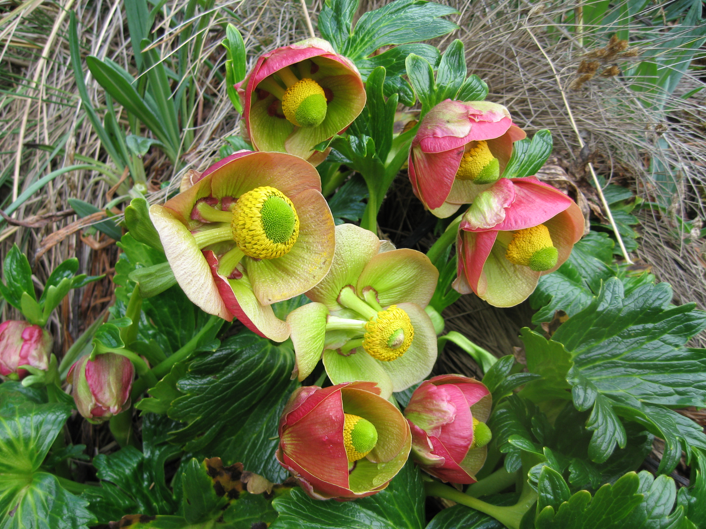

Research and conservation of native Andean conifers, focusing on threatened populations, distribution modeling and field verification.

Identification, monitoring and conservation planning for priority plant species across the Andes.

Field expeditions to document biodiversity, discover populations and generate baseline floristic information.

Restoration of degraded ecosystems using native species and science-based ecological recovery strategies.